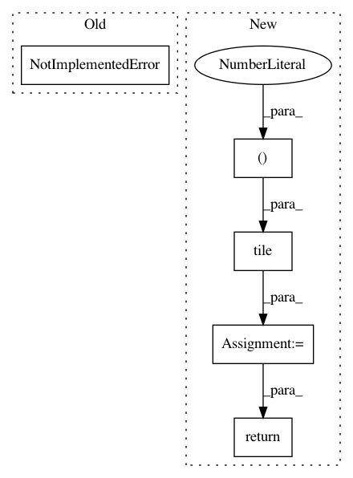

87a3f9e47cbe9f8786d2e3907c1bd6d769dcdd22,safe_rl/triangulation.py,Delaunay,gradient_at,#Delaunay#Any#Any#,310
Before Change
if vertex_values is not None:
return np.einsum("ijk,ik->ij", weights, vertex_values[simplices])
else:
return NotImplementedError("wip")
After Change
// Indices of constraints (ndim gradients for each point, which each
// depend on the nsimp vertices of the simplex.
rows = np.repeat(np.arange(npoints * self.ndim), nsimp)
cols = np.tile(simplices, (1, self.ndim)).ravel()
return sparse.coo_matrix((weights.ravel(), (rows, cols)),
shape=(self.ndim * npoints, self.nindex))
In pattern: SUPERPATTERN
Frequency: 3
Non-data size: 5
Instances
Project Name: befelix/safe_learning
Commit Name: 87a3f9e47cbe9f8786d2e3907c1bd6d769dcdd22
Time: 2016-09-29
Author: fberkenkamp@gmail.com
File Name: safe_rl/triangulation.py
Class Name: Delaunay
Method Name: gradient_at
Project Name: GPflow/GPflow
Commit Name: d1ac7b831ad36cd0e4bdd7980819f83208345148
Time: 2018-02-07
Author: alex.ialongo@gmail.com
File Name: gpflow/expectations.py
Class Name:
Method Name: _expectation
Project Name: CamDavidsonPilon/lifelines
Commit Name: 3deaf69d104f6981b18caaf38fd028c1290104c7
Time: 2020-07-22
Author: cam.davidson.pilon@gmail.com
File Name: lifelines/fitters/__init__.py
Class Name: ParametericAFTRegressionFitter
Method Name: predict_hazard